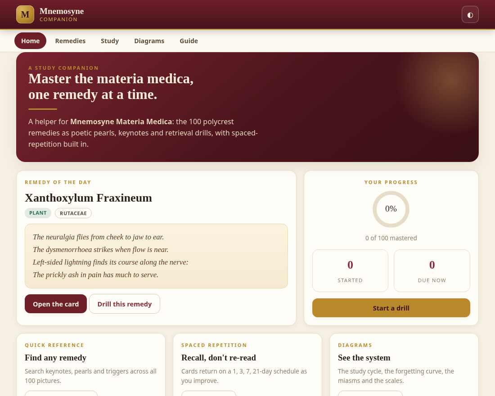
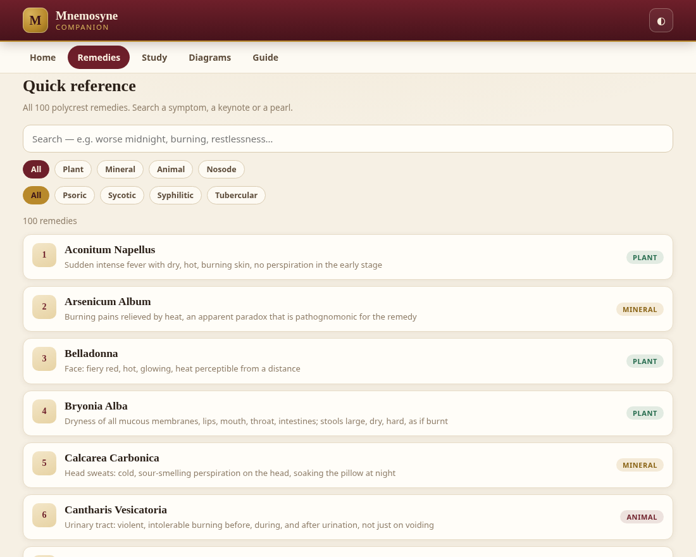
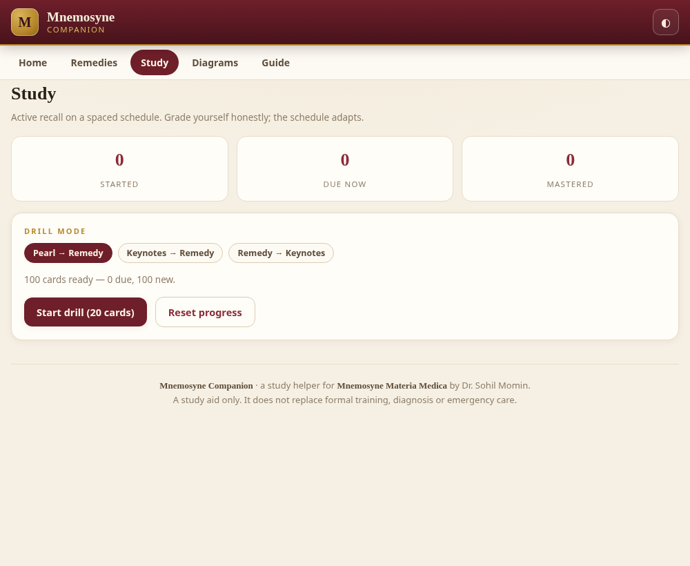
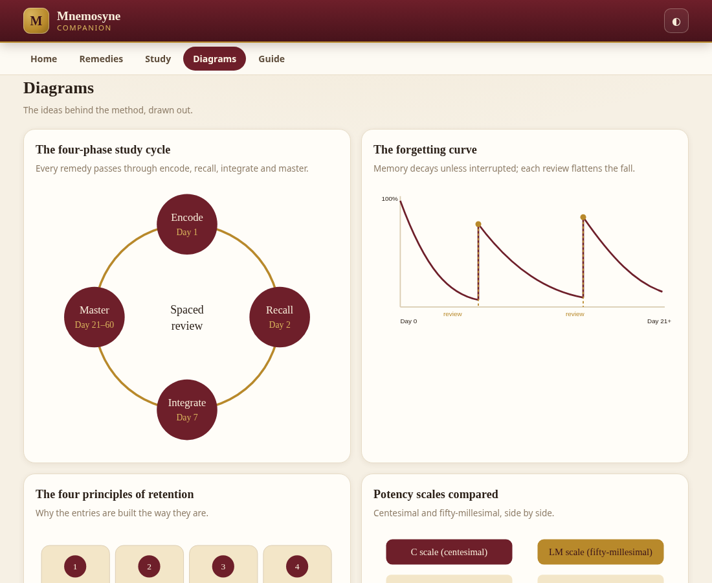
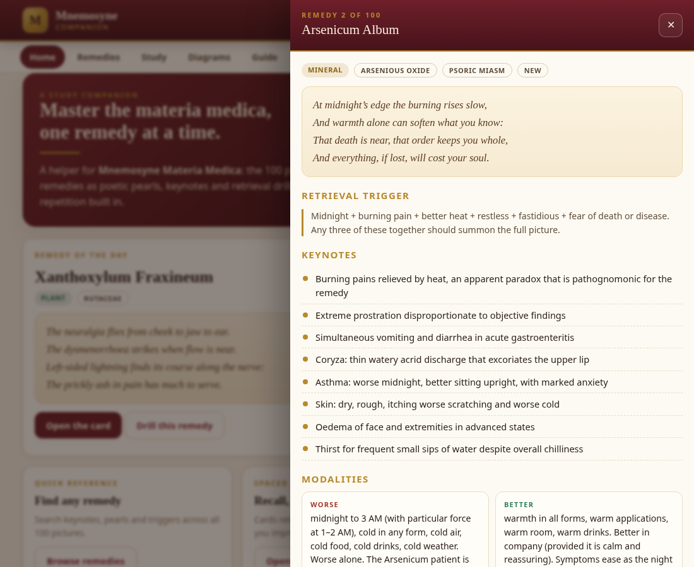
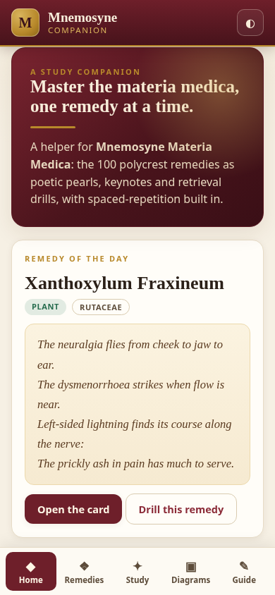

Quick reference
Search all 100 pictures by symptom, keynote or pearl — then filter by kingdom and by miasm. A live count keeps you oriented across the whole set.
Companion to Mnemosyne Materia Medica
A study companion for the 100 polycrest homoeopathic remedies — poetic pearls, keynotes and spaced-repetition drills, in a single offline app.
The book teaches the method; this is the practice bench. Mnemosyne, the Greek goddess of memory, lends her name to a tool built for recall — not re-reading.


 100 remedies
8 keynotes each
3 drill modes
6 inline SVG diagrams
Offline · no tracking
100 remedies
8 keynotes each
3 drill modes
6 inline SVG diagrams
Offline · no tracking
What it contains
Each remedy carries its study layer — the pearl, the keynotes, the modalities and the differentials — and the app turns them into active recall instead of passive reading.
Search all 100 pictures by symptom, keynote or pearl — then filter by kingdom and by miasm. A live count keeps you oriented across the whole set.
Flashcards in three modes, graded Again / Hard / Good / Easy on a Leitner schedule of 0, 1, 3, 7, 21 and 45 days. Cards reach mastery at the fifth box.
Started, due-now and mastered counts, drawn as a progress ring. Stored only in your own browser — it never leaves your device.
The four-phase cycle, the forgetting curve, the principles of retention, the C and LM potency scales, the miasmatic tree and the memory palace — all hand-written inline SVG.
A session timer that walks the encode → recall → integrate → master cycle, announcing each phase as it completes so you keep to the method.
The method, a field guide to a remedy card, a posology note and the safety frame — plus light/dark themes and #remedies, #study, #diagrams, #guide deep links.
How it works
The app follows the four-phase protocol in the book. You encode a remedy, recall it before you reveal, integrate it with its differentials, and let the schedule carry it to mastery.
Read the pearl and the keynotes. Say them aloud. The first pass builds the shape of the picture.
Day 1Drill in any of three modes. Recall before you reveal — the struggle is the point.
Day 2Read the differentials and the modalities. Separate the remedy from its nearest competitors.
Day 7The schedule spaces the card out on its own. Keep returning; spacing beats massing.
Day 21–60A look inside
A calm, legible interface that stays out of the way of the material. Desktop and phone, light and dark.






Get started
Nothing to install, nothing to sign up for. Open it online, or take the single file with you.
Open the live app in any browser. It is served straight from this repository's /play/ path.
URL: drsamonline.github.io/mnemosyne-companion/play/
Download the standalone file and open it in any browser. It is one self-contained HTML file with no internet dependency — it works on a plane, in a clinic with no signal, or from a USB stick.
On a phone, choose Open in browser rather than a file-preview app.
Questions
No. It is the companion app. It carries the study layer — pearls, keynotes, modalities, differentials and miasm groups — and adds spaced-repetition practice. The full clinical descriptions, memory hacks and case histories stay in the book.
The app is published for readers of the book. It is free to view and to use for your own personal study. It is not open source and not public domain — see the LICENSE.
Completely. There are no network calls of any kind. Download the file and it runs anywhere.
No. There is no server, no analytics, no account and no telemetry. Your progress is stored only in your own browser and never leaves your device.
Cards move through six boxes with intervals of 0, 1, 3, 7, 21 and 45 days. Grading “Again” returns a card to the first box; “Hard” drops it one; “Good” advances it one; “Easy” advances it two. Cards reach “mastered” at the fifth box.
Because the book's Appendix B classifies 51 of the 100 remedies into miasmatic groups. The app shows a tag only where the book does, rather than inventing one.
Yes. Open any remedy card and press Drill this remedy to run a single-card session.
Any current Chrome, Edge, Safari or Firefox, on desktop or mobile. No plugins required.
No. It is a study aid. It does not diagnose, treat or prescribe, and it does not replace formal training, clinical judgement or emergency care. Read the full disclaimer.